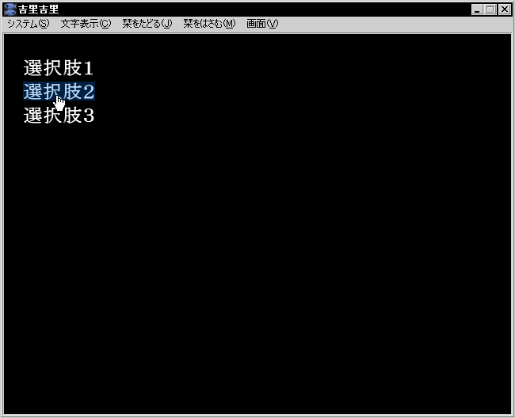

KAG では選択肢というよりもむしろハイパーリンクに近い考え方で選択肢を実現します。
選択肢を使うには
link と
endlink というタグを使います。この2つのタグで選択肢となる文章を挟むと、そこがマウスやキーボードで選択可能になります。マウスでクリックされたり、キーボードで Enter キーが押されると、該当する link タグに書かれた target 属性のラベルにジャンプします。
また、選択肢待ちや、シナリオの終了など、動作を停止したい場合は
[s] タグを書きます。メニューから「次の選択肢まで進む」を選ぶと、この
[s] タグが来るまでノンストップでシナリオを実行します。
これらを使って、以下のように記述することができます。target= の後の * (アステリスク) は必要ですので忘れないようにしてください。また、| (縦棒) 以降は、target の後に指定するときには必要ありません。
[wait time=200]
*start|スタート
[cm]
[link target=*select1]選択肢１[endlink][r]
[link target=*select2]選択肢２[endlink][r]
[link target=*select3]選択肢３[endlink][r]
[s]
*select1
選択肢１が選択されました。[l]
[s]
*select2
選択肢２が選択されました。[l]
[s]
*select3
選択肢３が選択されました。[l]
[s]
これをこのまま実行させると、選択肢を選択しても選択肢が消えません。
消すには、通常ラベルの次に [cm] を書きます。
[wait time=200]
*start|スタート
[cm]
[link target=*select1]選択肢１[endlink][r]
[link target=*select2]選択肢２[endlink][r]
[link target=*select3]選択肢３[endlink][r]
[s]
*select1
[cm]
選択肢１が選択されました。[l]
[s]
*select2
[cm]
選択肢２が選択されました。[l]
[s]
*select3
[cm]
選択肢３が選択されました。[l]
[s]

選択肢の例
Note
選択肢は一回選択されると、新しい選択肢が表示されるか、
unlocklink タグが実行されるまでは選択することはできません。
また、すでに画面に表示されている選択肢を選択不能にするために
locklink タグがあります。
通常の記述ではこのことは気にする必要はありません。